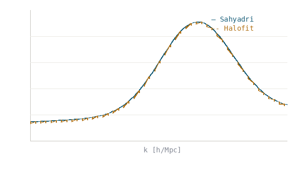
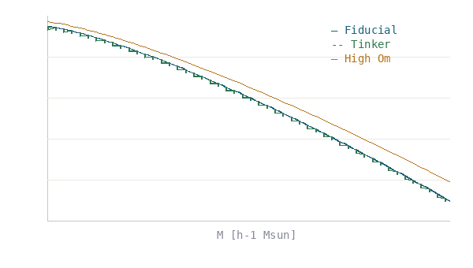

Interactive visualizations of Sahyadri simulation outputs and key scientific results.
Projected dark-matter density slices showing structure growth from z = 12 to the present day. Use the slider to step through redshift snapshots.

Schematic: Sahyadri measurement (solid blue) vs Halofit prediction (dashed amber). Excellent agreement validates the simulation across non-linear scales.

Schematic: Fiducial (blue) agrees with Tinker fit (green dashed). High-Omega_m cosmology (amber) shows enhanced halo abundance.
The VVF provides a powerful probe of cosmological parameters through the statistics of cosmic voids and the large-scale environment. Sahyadri results demonstrate that varying Omega_m produces measurable shifts in the VVF, with voids becoming systematically larger in low-Omega_m cosmologies. This sensitivity, combined with independence from traditional two-point statistics, makes the VVF a valuable addition to the cosmological analysis toolkit.